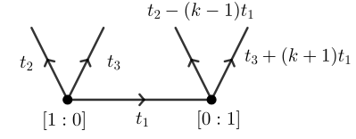

BPS numbers (Table 5.1)
In this section, we provide code that generates Table 5.1 in the companion article. Let $X_k$ be as in the article. Recall that it has the following GKM graph, with $t_1+t_2+t_3 = 0$, as depicted in Figure 5.1 of the companion article:

Then equation (5.11) expresses the genus zero degree $d$ BPS numbers of $X_k$ as
\[n_{0,d\mathbf{0}_{X_k}}(X_k) = \frac{1}{d^3 k^2}\sum_{e\mid d} \mu(d/e)(-1)^{(k+1)e+1}\binom{k^2 e}{e}.\]
Table 5.1 is obtained from this formula using the following code. Copy the following code and run it in the Julia REPL:
# Return BPS state using Gromov--Witten invariants and Gopakumar--Vafa formula.
function BPS_states(k::Int64, dMax::Int64; printStuff::Bool = true)
Nd = [(-1)^( (k+1)*d + 1 ) // (k^2 * d^3) * binomial(k^2 * d, d) for d in 1:dMax]
nd = Vector(undef, dMax)
for d in 1:dMax
nd[d] = Nd[d]
for e in 1:(d-1)
!(divides(d, e)[1]) && continue
# e divides d and e < d.
nd[d] -= 1//(d // e)^3 * nd[e]
end
if denominator(nd[d] == 1)
nd[d] = numerator(nd[d])
end
end
printStuff && println("k = $k")
printStuff && println("Nd = $Nd")
printStuff && println("nd = $nd")
return nd
end
# Return BPS state using Mobius inversion.
function BPS_state_mobius(k::Int64, d::Int64)
r = 0
for e in 1:d
!(divides(d, e)[1]) && continue
# e divides d and e < d.
m = mobius(e)
de = Int64(d//e)
m == 0 && continue
r += m * (-1)^( (k+1)*de + 1 ) * binomial(k^2 * de, de)
end
r //= d^3 * k^2
if denominator(r) == 1
return numerator(r)
end
return r
end
# Return the Mobius function evaluated at n.
function mobius(n::Int64)
m = 1
for f in factor(n)
f[2] > 1 && return 0
m *= -1
end
return m
end
# Print the Table 5.1.
function print_BPS_table(kMax::Int64, dMax::Int64; latex::Bool=false)
for k in 1:kMax
nd = BPS_states(k, dMax; printStuff=false)
for d in 1:dMax
@req nd[d] == BPS_state_mobius(k, d) "BPS states disagree for d=$d, k=$k"
end
if latex
print("\$$k\$ & ")
for d in 1:dMax
print("\$$(nd[d])\$")
d != dMax && print(" & ")
end
println(" \\\\\\hline")
else
print("k = $k:\t")
for d in 1:dMax
print("$(nd[d])\t")
end
println()
end
end
endNow, run the following code:
julia> print_BPS_table(5, 7)
k = 1: -1 0 0 0 0 0 0
k = 2: 1 -1 2 -7 31 -156 863
k = 3: -1 -2 -12 -102 -1086 -13284 -179226
k = 4: 1 -4 40 -620 12020 -268248 6601292
k = 5: -1 -6 -100 -2450 -75050 -2647580 -102998030